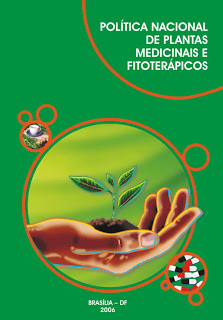
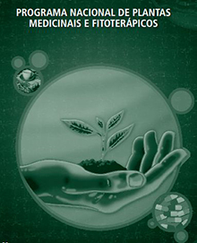

Em 2004, a 2ª Conferência Nacional de Ciência, Tecnologia e Inovação em Saúde e a 147ª Reunião Ordinária do Conselho Nacional de Saúde, aprovam integralmente a Política Nacional de Ciência, Tecnologia e Inovação em Saúde (PNCTIS). Esta política é pioneira ao descrever a interseção do sistema de ciência e tecnologia com o sistema de saúde, espaço em que ocorre a inovação.
Em vários trechos a PNCTIS refere-se especificamente a medicamentos de origem vegetal, à importância de uma participação maior do setor produtivo nacional, à necessidade de maiores investimentos em P&D, à formação de recursos humanos, a necessidade de apoio ao trabalho em redes, à consideração do conhecimento tradicional e da biodiversidade. É importante aqui registrar que é a primeira vez que uma política nacional associa inovação, medicamentos e biodiversidade.

Em 2006, o Brasil publicou a Política Nacional de Plantas Medicinais e Fitoterápicos (PNPMF).
A PNPMF foi formulada tendo por objetivo geral garantir à população brasileira o acesso seguro e o uso racional de plantas medicinais e fitoterápicos, promovendo o uso sustentável da biodiversidade, e o desenvolvimento da cadeia produtiva, bem como da indústria. Almeja, ainda, a ampliação de opções terapêuticas aos usuários, garantindo a segurança, a eficácia e a qualidade, a consideração do conhecimento tradicional sobre as plantas, a construção do marco regulatório para produção, a distribuição e o uso de plantas medicinais e dos fitoterápicos a partir dos modelos e experiências existentes no Brasil e em outros países.
Entre seus objetivos encontram-se: a promoção da pesquisa e do desenvolvimento voltados para tecnologias e inovações em plantas medicinais e fitoterápicos nas diversas fases da cadeia produtiva; a promoção do desenvolvimento sustentável das cadeias produtivas de plantas medicinais e fitoterápicos e o fortalecimento da indústria farmacêutica nacional neste campo; a promoção do uso sustentável da biodiversidade e a repartição dos benefícios decorrentes do acesso aos recursos genéticos de plantas medicinais e ao conhecimento tradicional associado.
Em 2008, foi aprovado o Programa Nacional de Plantas Medicinais e Fitoterápicos e o Comitê Nacional de Plantas Medicinais e Fitoterápicos, com o objetivo de regular a produção, uso e distribuição das plantas medicinais afim de “garantir à população brasileira o acesso seguro e o uso racional de plantas medicinais e fitoterápicos, promovendo o uso sustentável da biodiversidade, o desenvolvimento da cadeia produtiva e da indústria nacional”.
Em 2009, outra importante medida foi criada para enfatizar e fortalecer o interesse do Ministério da Saúde pelas plantas medicinais, que se trata da publicação da Relação Nacional de Plantas Medicinais de Interesse ao SUS (RENISUS), com respaldo da Política Nacional de Plantas Medicinais e Fitoterápicos. A criação da RENISUS estabeleceu uma lista com espécies vegetais considerando as que já são utilizadas nos serviços de saúde estaduais e municipais, o conhecimento tradicional e popular e os estudos químicos e farmacológicos disponíveis sobre as mesmas.

Em 2014, foi publicada a RDC nº 26/2014 que regulamenta o registro de Fitoterápicos e o registro e a notificação de Produtos Tradicionais Fitoterápicos. Essa norma também se aplica a produtos constituídos de fungos multicelulares e algas como Insumos Farmacêuticos Ativos, até que seja publicada regulamentação específica para essas classes. A norma de registro refere-se tanto ao medicamento fitoterápico quanto ao produto tradicional fitoterápico.
A principal diferença entre essas duas classes é que o Medicamento Fitoterápico comprova sua segurança e eficácia por meio de estudos clínicos, enquanto o Produtos Tradicionais Fitoterápicos comprova a segurança e efetividade pela demonstração do tempo de uso na literatura técnico-científica. Para serem disponibilizados ao consumo, tanto os Medicamentos Fitoterápicos quanto o Produto Tradicional Fitoterápico terão que apresentar padrões semelhantes de qualidade, diferenciando-se nos requisitos de comprovação da segurança e eficácia/efetividade, bulas/folheto informativo, embalagens, restrição de uso e de Boas Práticas de Fabricação e Controle. No módulo seguinte você compreenderá mais detalhes sobre estas classes.
A partir desta regulamentação foi elaborado um consolidado que se encontra em sua quinta versão. Neste documento são citadas as normas mais utilizadas no registro ou notificação dos medicamentos fitoterápicos.
 Para maior compreensão sobre a PNPMF sugerimos a leitura do artigo “A Política Nacional de Plantas Medicinais e fitoterápicos: construção, perspectivas e desafios” que analisa a construção da política para a implantação/implementação da Fitoterapia no SUS, das facilidades e dificuldades envolvidas neste processo e dos desafios e perspectivas.
Para maior compreensão sobre a PNPMF sugerimos a leitura do artigo “A Política Nacional de Plantas Medicinais e fitoterápicos: construção, perspectivas e desafios” que analisa a construção da política para a implantação/implementação da Fitoterapia no SUS, das facilidades e dificuldades envolvidas neste processo e dos desafios e perspectivas.
Você perceberá a partir desta análise que, apesar de o governo federal ter desenvolvido diversas ações, a implementação da política pouco avançou em função das dificuldades para seu uso no SUS, como o pouco conhecimento que os profissionais de saúde têm sobre a Fitoterapia, o entendimento deturpado sobre a eficácia e a segurança deste tratamento por parte de usuários e profissionais de saúde, a dificuldade do acesso à planta medicinal e ao fitoterápico, além da estruturação dos serviços nos moldes que favorecem o uso do medicamento sintético. Clique aqui e leia o artigo completo.
Ainda sobre a PNPMF, sugerimos também a leitura do artigo “Os dez anos da Política Nacional de Plantas Medicinais e Fitoterápicos (PNPMF) e os principais entraves da cadeia produtiva de extratos vegetais e Medicamentos Fitoterápicos no Brasil”. O artigo faz uma análise sobre o desenvolvimento tecnológico de fitoterápicos, com pontos atuais das legislações relacionadas vigentes e seus respectivos avanços e "gargalos". Clique aqui e leia o artigo completo.
Para conhecer melhor as ações apresentadas nos quadros anteriores sugerimos a leitura do artigo “A Evolução das Políticas de Ciência e Tecnologia no Brasil e a Incorporação da Inovação”. Este artigo foi base para construção das narrativas deste módulo no que diz respeito às políticas de C&T no Brasil. Ele apresenta a evolução das políticas de ciência e tecnologia no Brasil e identifica de que maneira a inovação foi sendo incorporada no âmbito de tais políticas. Clique aqui e leia o artigo completo.
É um conjunto de etapas consecutivas, ao longo das quais os diversos insumos sofrem algum tipo de transformação, até a constituição de um produto final (bem ou serviço). Trata-se, portanto, de uma sucessão de operações (ou de estágios técnicos de produção e de distribuição) integradas, realizadas por diversas unidades interligadas como uma corrente, desde a extração e manuseio da matéria-prima até a distribuição do produto. É considerada também de forma ampla como um encadeamento de modificações da matéria-prima, com finalidade econômica, que inclui desde a exploração dessa matéria-prima, em seu meio ambiente natural, até o seu retorno à natureza, passando pelos circuitos produtivos, de consumo, de recuperação, tratamento e eliminação de efluentes e resíduos sólidos.
É aquele obtido com emprego exclusivo de matérias-primas vegetais, cuja segurança e efetividade seja alicerçada no longo histórico de utilização demonstrado em documentação técnico-científica, sem evidências conhecidas ou informadas de risco à saúde do usuário e que seja caracterizado pela constância de sua qualidade.